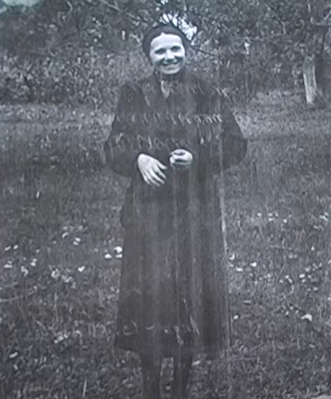
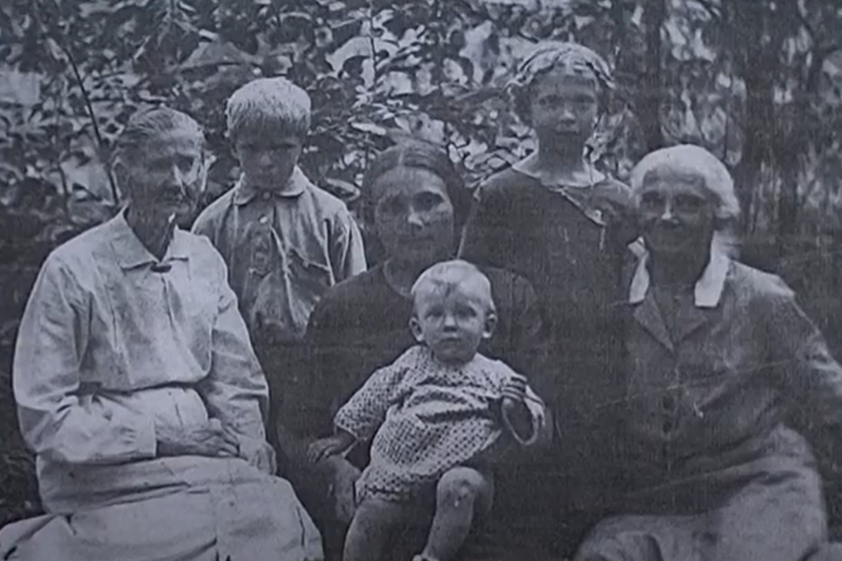
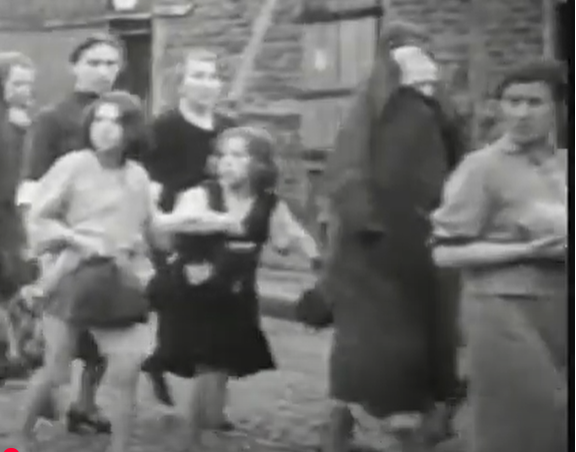
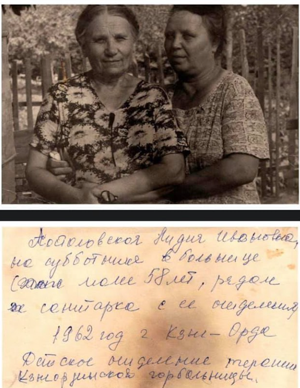

Історична карта 1945 року
Перейти до карти
«Я, Лідія Іванівна Постоловська, завідувачка дитячого будинку №3 у Вінниці, відчула на собі весь тягар війни та окупації, але залишилася вірною своїм принципам.

Війна прийшла, коли я була ще молодою жінкою. Виховувала двох донечок, Аллу і Інну, і все, чого я хотіла — це забезпечити їм щасливе дитинство та світле майбутнє. 20 липня 1941 року, коли нацисти вже увійшли до нашого міста, Вінниця змінилася до невпізнання. Ми не мали грошей, щоб втекти, тому залишитись стало нашим єдиним варіантом. Мама була важко хвора, їй уже виповнилося 67 років, а я, маючи двох дітей, яких потрібно забезпечувати, мусила йти працювати. Спочатку взяли мене в міську управу агентом з постачання, а вже згодом я очолила весь його відділ. Це не була проста робота, але я мусила дбати про своїх доньок, дбати про свою родину.

Згодом мені доручили зробити обстеження дитячого будинку на Старому місті. Я йшла туди вже знаючи, що ця дитяча установа потребує не лише перевірки, а справжнього порятунку. Побачивши тих дітей – блідих, худих, опухлих від голоду, з великими сумними очима – серце моє стиснулося від болю. Саме в той момент я прийняла рішення взяти відповідальність за цих дітей та очолити дитбудинок.
У дитячому будинку було 69 дітей, кожен з яких потребував уваги, допомоги та, головне, їжі. Тоді я вирішила скористалася зв'язками в постачанні. Директори молочного заводу, хлібокомбінату, плодоконсервного заводу — вони всі були моїми знайомими. Вони не відмовили у допомозі, і ми почали отримувати молоко, хліб, консерви — усе те, що могло допомогти дітям вижити в ці темні для нас часи. Окрему роль відігравав бургомістр міста, Савостьянов. Саме завдяки йому дитячий будинок був закріплений за консервним заводом, а молочна ферма психіатричної лікарні забезпечувала дітей молоком.
Для того, аби ще більше убезпечити своїх вихованців, я вела подвійну реєстрацію дітей. Одну — для німців, а іншу — для себе. Це був єдиний спосіб зберегти дітей в таємниці, серед яких було 15 євреїв. Серед персоналу також працювали євреї: старший вихователь і прачка, яка мала двох дітей. Таким чином, у закладі перебувало 19 осіб єврейського походження. Це була дуже небезпечна ситуація. Ви не уявляєте, скільки разів я переживала, коли на порозі з’являлися німці, а я мусила бути спокійною. Усередині ж серце билося так швидко та голосно, що здавалося, його чують усі навколо. Діти боялися. Вони були маленькими, беззахисними, і я мусила щось робити. Якщо б хтось дізнався, хто насправді був там, нас би знищили. Усіх. Це важко постійно бачити налякані очі цих дітей, яким доводилось ховатися у величезних діжках на кухні, аби залишитись непоміченими. У той час, як ми ходили по лезу, для інших у місті я і бургомістр Савостьянов були пособниками нацистів. Та хіба це мало значення? Ми врятували десятки невинних душ, і це єдине, що тоді було важливо.

Коли до міста повернулися радянські війська, радість звільнення швидко змінилася тривогою. Літо 44-го року принесло нові випробування. Вже кілька разів мене викликали на допит — щоразу все більше запитань, все більше підозр. Маслов, той самий п’яниця та скандаліст, якого ще до окупації я була змушена через суд виселити з будинку, тепер став моїм обвинувачем. Були розпущені чутки про співпрацю з німцями, нібито я видавала партизанів і євреїв. Безсила перед цими брехливами звинуваченнями, 6 січня 1945 року мене, Постовловську Лідію Іванівну, засудили на 4 роки каторжних робіт. Півтора роки на відновленні у Вінницькому суперфосфатному заводі, а потім переведення до Архангельської області — в табір, де я стала медсестрою. Але й цього було замало. Коли термін покарання закінчився, мене відправили до заслання в Казахстан.»
Лідія Іванівна не зламалася навіть у засланні. Вона не втрачала надії і, борючись за свої права, у 1949 році відправила прохання про помилування на ім'я Голови Президії Верховної Ради СРСР Шверника. Проте її мрія повернутися до дітей не здійснилася. Тільки через 12 років, у 1957 році, Лідія Постоловська була реабілітована і повернула своє чесне ім’я.

Сьогодні ім'я Лідії Постоловської нагадує нам, що справжня людяність здатна долати навіть найжорстокіші випробування. Її подвиг заслуговує на те, щоб його пам’ятали, як приклад того, що навіть в часи темряви можна залишатися Людиною.
автор Зубарєва
Цікаві місця

Всі права захищені.